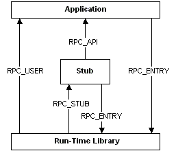

title: Portability Macros (Rpc.h) description: The RPC tools achieve model, calling, and naming-convention independence by associating data types and function-return types in the generated stub files and header files with definitions that are specific to each platform. ms.assetid: 94de1138-5a84-41d8-bf88-97f0ac630f5f keywords:
The RPC tools achieve model, calling, and naming-convention independence by associating data types and function-return types in the generated stub files and header files with definitions that are specific to each platform. These macro definitions ensure that any data types and functions that require the designation of __far are specified as far objects.
The following figure shows the macro definitions that the MIDL compiler applies to function calls between RPC components:

RPC macros are defined as follows.
| Definition | Description |
|---|---|
| __RPC_API | Applied to calls made by the stub to the user application. Both functions are in the same executable program. |
| __RPC_FAR | Applied to the standard macro definition for pointers. This macro definition should appear as part of the signature of all user-supplied functions. |
| __RPC_STUB | Applied to calls made from the run-time library to the stub. These calls can be considered private. |
| __RPC_USER | Applied to calls made by the run-time library to the user application. These cross the boundary between a DLL and an application. |
| RPC_ENTRY | Applied to calls made by the application or stub to the run-time library. This macro definition is applied to all RPC run-time functions. |
To link correctly with the Microsoft RPC run-time libraries, stubs, and support routines, some user-supplied functions must also include these macros in the function definition. Use the macro __RPC_API when you define the functions associated with memory management, user-defined binding handles, and the transmit_as attribute, and use the macro __RPC_USER when you define the context run-down routine associated with the context handle. Specify the functions as:
__RPC_USER midl_user_allocate(...)
__RPC_USER midl_user_free(...)
__RPC_USER handletype_bind(...)
__RPC_USER handletype_unbind(...)
__RPC_USER type_to_local
__RPC_USER type_from_local
__RPC_USER type_to_xmit(...)
__RPC_USER type_from_xmit(...)
__RPC_USER type_free_local
__RPC_USER type_free_inst(...)
__RPC_USER type_free_xmit(...)
__RPC_USER context_rundown(...)
[!Note]
All pointer parameters in these functions must be specified using the macro __RPC_FAR.
| Requirement | Value |
|---|---|
| Minimum supported client | Windows 2000 Professional [desktop apps only] |
| Minimum supported server | Windows 2000 Server [desktop apps only] |
| Header | Rpc.h |